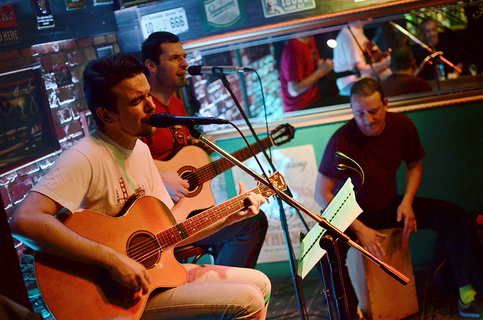
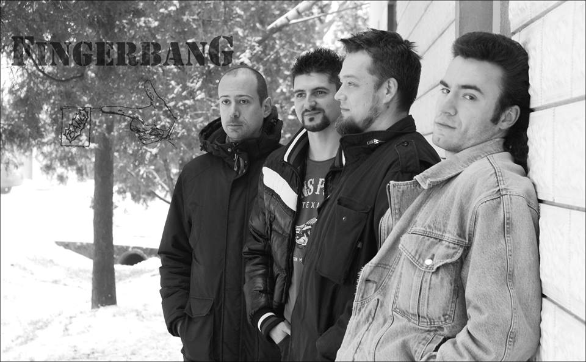
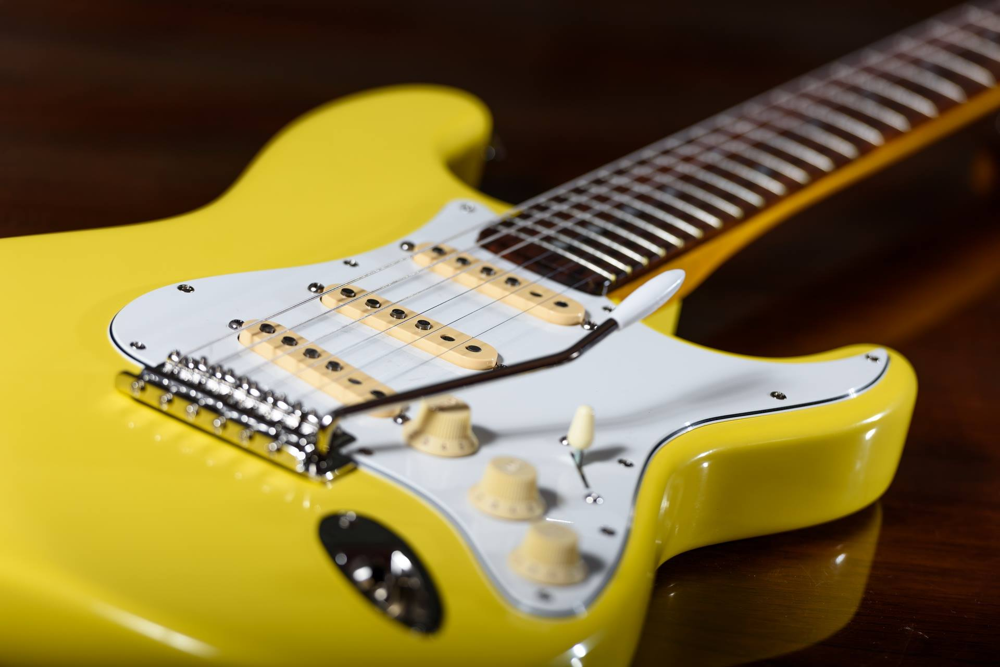

Woodens
Akustičarski sastav postoji od 2001. godine, a danas ga čine:
- Korać Milan — glas, akustična gitara
- Nenad Patković — akustična gitara, glas
- Đorđe Bubnjević — kahon

La Sed Gitana
Flamenko škola „La Sed Gitana“ nudi zanimljive i profesionalne časove flamenka, kvalitetan program rada i svojom nastavnom metodologijom pruža najbolje učenje flamenka u Novom Sadu obuhvatajući ples, muziku, jezik i kulturu Španije. Kroz estetiku flamenka polaznici uče kako da se izražavaju pokretima tela, ruku, šake i veštim radom nogu kroz različite i uzbudljive ritmove koje nudi flamenko.

Fingerbang
Članovi banda:
- Srđan Kostić —bubnjevi (drums)
- Marko Vujkov —bas (bass guitar)
- Stefan Stefanović Gile — usna harmonika (harmonica)
- Vladimir Gurjanov —gitara, vokal (guitar, vocals)

Yaroslavsky guitars
Informacije:
- Ručno rađene gitare
- Ručno rađena lampaška pojačala

Mojo Hand
Članovi banda:
- Azra Alibegić
- Slaven Kalebic
- Miha Friedrich
- Matej Tekavčič
- Marko Petrušič
- Romina Ponti
- Špela Zajc
- Janja Gomboc
.jpg)
El Kachon
Članovi banda:
- Tina Gerbec Radaković — Vocal
- Tomi Perinčič — Guitar, slide guitar & vocal
- Andrej Barbič-Krt — Guitar, harp & vocal
- Sondža —Bass & vocal
- Žiga Dobravc — Drums
- Primož Malenšek —PimpS - Percussion
- Aleš Dravinec — Audio engineer